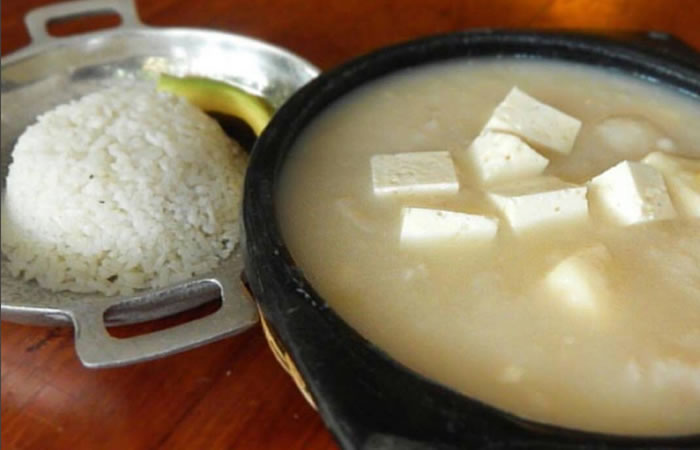
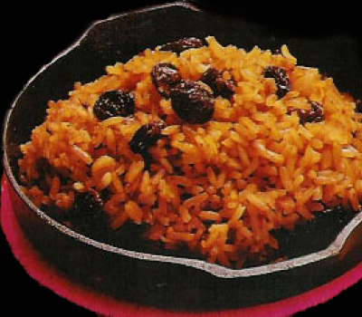

Mote de Queso
El queso es uno de los ingredientes imprescindibles de la dieta cotidiana en la costa Caribe de Colombia. Se consume solo, acompañado de un guineo, o bien se integra dentro de otros platos como la arepa y el pan de queso. Un plato exquisito y costeño, originario de los departamentos de Sucre y Córdoba, que se basa enormemente en este ingrediente se conoce hoy con el nombre de mote de queso y se elabora con ñame, queso costeño duro, cebolla, ajo y suero costeño.
Arroz con Coco
El arroz con coco es un plato típico de la costa Caribe Colombiana . Tiene dos formas de prepararse, Arroz Blanco de Coco o Arroz de Coco Negrito . Es una preparación agridulce que suele acompañar muy especialmente al pescado frito y se sirve con patacones y ensalada. Receta:
Ingredientes
- 2 cocos
- 2 libras de arroz
- 2 cucharadas de azúcar
- 2 cucharaditas de sal